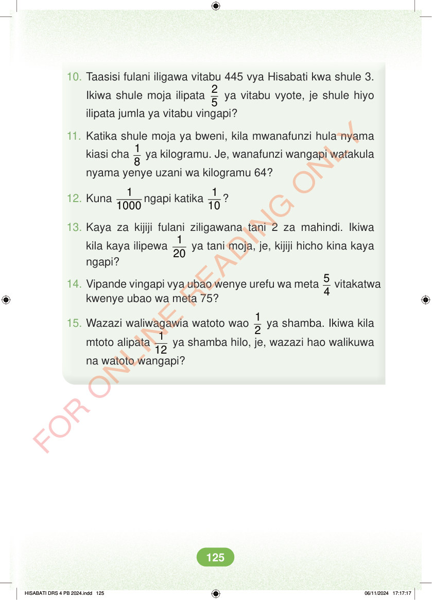

<!DOCTYPE html>
<html lang="sw-TZ"><head><meta charset="utf-8"><meta name="viewport" content="width=device-width,initial-scale=1">
<title>Hisabati: Kitabu cha Mwanafunzi Darasa la Nne</title>
<meta name="title-id" content="pg131_sec001"><meta name="page-section-id" content="137">
<link href="./content/tailwind_output.css" rel="stylesheet"><link href="./assets/libs/fontawesome/css/all.min.css" rel="stylesheet"><link href="./assets/fonts.css" rel="stylesheet">
<style>body{margin:0;background:#eef1ed}main{width:100%;display:flex;justify-content:center;padding:1rem 1rem 5rem;box-sizing:border-box}#content{width:100%;display:flex;justify-content:center}.pdf-page{position:relative;width:min(calc(100vw - 2rem),56rem);aspect-ratio:540.8980102539062/750.6610107421875;background:white;box-shadow:0 4px 24px #0002;overflow:hidden}.pdf-page img{position:absolute;inset:0;width:100%;height:100%;object-fit:fill}</style>
</head><body><main><h1 class="sr-only" id="page-heading">Ukurasa wa 131</h1><div id="content" class="opacity-0"><section role="article" data-section-type="pdf_accessible_page" data-section-id="pg131_sec001" aria-labelledby="page-heading" class="pdf-page"><p class="sr-only" data-id="pg131_gp001_tx001">10. Taasisi fulani iligawa vitabu 445 vya Hisabati kwa shule 3. Ikiwa shule moja ilipata 2 5 ya vitabu vyote, je shule hiyo ilipata jumla ya vitabu vingapi? 11. Katika shule moja ya bweni, kila mwanafunzi hula nyama kiasi cha 1 8 ya kilogramu. Je, wanafunzi wangapi watakula nyama yenye uzani wa kilogramu 64? 12. Kuna 1 1000 ngapi katika 1 10 ? 13. Kaya za kijiji fulani ziligawana tani 2 za mahindi. Ikiwa kila kaya ilipewa 1 20 ya tani moja, je, kijiji hicho kina kaya ngapi? 14. Vipande vingapi vya ubao wenye urefu wa meta 5 4 vitakatwa kwenye ubao wa meta 75? 15. Wazazi waliwagawia watoto wao 1 2 ya shamba. Ikiwa kila mtoto alipata 1 12 ya shamba hilo, je, wazazi hao walikuwa na watoto wangapi? HISABATI DRS 4 PB 2024.indd 125 HISABATI DRS 4 PB 2024.indd 125 06/11/2024 17:17:17 06/11/2024 17:17:17</p></section></div></main><div class="relative z-50" id="interface-container"></div><div class="relative z-50" id="nav-container"></div><script src="./assets/offline-preloader.js?v=audiofix-20260824-1"></script><script src="./assets/scorm.js"></script><script src="./assets/base.bundle.local.js?v=audiofix-20260824-1"></script></body></html>